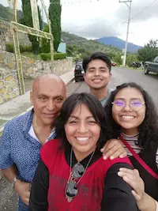

Moseley Jimenez Lopez | WDD 130
Hello everyone! I'm Moseley but you can call me Mose. I'm from Mexico and I'm so happy to be learning. I enjoy spending time with my family, my cats and my dog. I really like listening to music, especially k-pop, I would listen to music all day if I could! My favorite food is chiles rellenos. I also would like to attend a general conference and visit the temple there. There are 7 people in my family, my mom is beautiful and so kind, I like her smile and vibes, she is such a great person.I have three sisters and one brother, my young sister and my bother have served a mission as me, all of us serve in Mexico, where my sister serve in Mexico City North and my bother in Mexico Tamaulipas and I, I serve in Mexico City West 😊😊 two years ago. Serving a mission has been a great experience. I was able to know who is my savior and to know his grace I'm so grateful for that opportunity. Currently I work as a MTC teacher, it's a blessing to work with the missionaries.